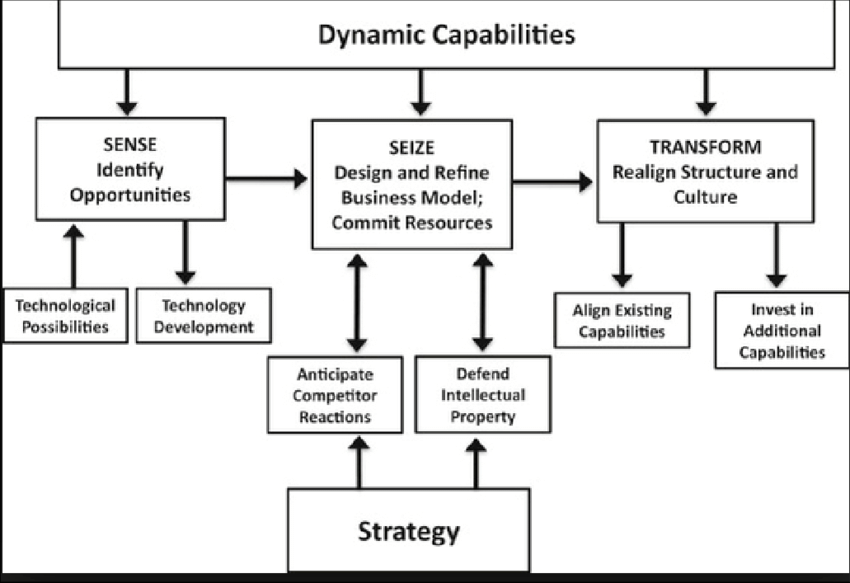

<style>
  p {margin-bottom: 1.5em;}
  li {margin-bottom: 1em;}
  ol {margin-bottom: 1.5em; margin-left: 2em;}
  div {margin-bottom: 1.5em;}
</style>

<article id="module2" class="active">
  <h2>Module 2: Types of Resources</h2>
  <p>
    In resource-based theory (RBT), an organization’s ability to achieve a competitive advantage depends on the types of internal resources it controls. These resources can be classified into tangible, intangible, and organizational capabilities.
  </p>
  <h3>Tangible Resources</h3>
  <p>Tangible Resources: These are physical and financial assets that are easy to identify and measure. Examples include machinery, office buildings, manufacturing equipment, and capital. In project management, tangible resources include software tools, templates, and formal methodologies (Azevedo et al., 2022).
  </p>
  <h3>Intangible Resources</h3>
  <p>These are non-physical assets that are often more difficult to replicate but are essential for long-term success. Examples include brand reputation, intellectual property, company culture, and customer loyalty. According to Jugdev, trust and shared organizational values are the sources of sustainable competitive advantage because they are difficult for competitors to see and imitate (Jugdev, 2004).</p>
  <h3>Organizational Capabilities</h3>
  <p>These refer to the skills and processes that allow a company to effectively coordinate and deploy its resources. This includes: efficient supply chain management, innovative product development, and strong customer service. In public sector healthcare, capabilities like service delivery optimization and cross-team coordination were found to be critical for long-term performance improvements (Svejvig & Schlichter, 2021).  </p>
  <h3>Core Competencies</h3>
  <p>A capability that becomes embedded within an organization and has a significant role in value creation, is referred to as a core competency (Huang et al., 2015). A core competency is essential to delivering value, unique to the organization, inimitable and has cross-functional integration. 
  </p>
  <h3>Sustaining Capabilities</h3>
  <p>
    According to Huang et al. (2015), capabilities can be built and sustained by:
  </p>
  <ul>
    <li>Training and development for employees</li>
    <li>Leadership support</li>
    <li>Knowledge sharing across teams</li>
    <li>Embedded in organizational processes</li>
    <li>Adapting to environmental changes</li>
  </ul>
  <h3>Dynamic Capabilities</h3>
  <p>Dynamic capabilities are an organization’s ability to integrate, build and adjust resources to adapt to the environment (Huang et al., 2015). These capabilities focus on adaptability, process-oriented and support continuous transformation (Huang et al., 2015). 
  </p>
  <br>
  <p>This diagram illustrates Teece’s Dynamic Capabilities Framework, which identifies three core capabilities organizations must develop: sensing opportunities, seizing them, and transforming resources to adapt to change.
  </p>
  

  <p>Understanding these types of resources is essential when applying the VRIO framework, as each type must be assessed for its value, rarity, inimitability, and how well it is organized within the firm.</p>

  <h3>Quiz</h3>
  <p>Answer the following questions to complete this module.</p>

  <form id="quiz-form">
    <div>
      <p><strong>1. According to Teece’s Dynamic Capabilities Framework, which of the following is not one of the three core dynamic capabilities organizations must develop?</strong></p>
      <label><input type="radio" name="q1" value="a"> A) Sensing opportunities</label><br>
      <label><input type="radio" name="q1" value="b"> B) Seizing opportunities</label><br>
      <label><input type="radio" name="q1" value="c"> C) Monitoring competitors</label><br>
      <label><input type="radio" name="q1" value="d"> D) Transforming resources</label><br>
      <span id="feedback-q1"></span>
    </div>

    <div>
      <p><strong>2. Your company is known for its highly efficient supply chain and seamless cross-team coordination. Despite having less physical infrastructure than competitors, it consistently outperforms them. Which type of resource is most responsible for this competitive advantage?</strong></p>
      <label><input type="radio" name="q2" value="a"> A) Tangible resources</label><br>
      <label><input type="radio" name="q2" value="b"> B) Intangible resources</label><br>
      <label><input type="radio" name="q2" value="c"> C) Organizational capabilities</label><br>
      <label><input type="radio" name="q2" value="d"> D) Financial assets</label><br>
      <span id="feedback-q2"></span>
    </div>

    <div>
      <p><strong>3. Which of the following is an example of an intangible resource?</strong></p>
      <label><input type="radio" name="q3" value="a"> A) Manufacturing equipment</label><br>
      <label><input type="radio" name="q3" value="b"> B) Office building</label><br>
      <label><input type="radio" name="q3" value="c"> C) Brand reputation</label><br>
      <label><input type="radio" name="q3" value="d"> D) Project management software</label><br>
      <span id="feedback-q3"></span>
    </div>

    <button type="button" onclick="checkQuiz(2)">Submit Quiz</button>
    <button onclick="resetQuiz(1)">Retry Quiz</button>
  </form>

  <br>
  
  <button onclick="completeModule('module2')">Complete Module</button>
</article>
